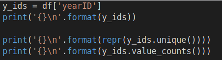

Metrics
Chapter Goals:
• Understand the common metrics used to summarize numeric data
• Learn how to describe categorical data using histograms
~~~~~~~~~~~~~~~~~~~~~~~~~~~~~~~~~
Numeric matricsWhen working with numeric features, we usually want to calculate metrics such as mean, standard deviation, etc.These metrics give us more insight into the type of data we're working with, which benefits our overall analysis of the dataset.
Rather than calculating several different metrics separately, pandas provides the
describe function to obtain a summary of a DataFrame's numeric data.
Using
describe with a DataFrame will return a summary of metrics for each of the DataFrame's numeric features. In our example,
df had three features with numerical values:
yearID,
HR, and
RBI.
Since we normally treat
yearID as a categorical feature, the second time we used
describe was with the
hr_rbi DataFrame, which only included the
HR and
RBI features.
To have
describe return specific percentiles, we can use the
percentiles keyword argument. The
percentiles argument takes in a list of decimal percentages, representing the percentiles we want returned in the summary.
Note that the 50
th percentile, i.e. the median, is always returned. The values specified in the
percentiles list will replace the default 25
th and 75
th percentiles.
~~~~~~~~~~~~~~~~~~~~~~~~~~~~~~~~~
Categorial FeaturesWith categorical features, we don't calculate metrics like mean, standard deviation, etc. Instead, we use
frequency counts to describe a categorical feature.
The frequency count for a specific category of a feature refers to how many times that category appears in the dataset. In pandas, we use the
value_counts function to obtain the frequency counts for each category in a column feature.
Using
value_counts without any keyword arguments will return the frequency counts for each category, sorted in descending order.
Setting
normalize=True returns the frequency proportions, rather than counts, for each category (note that the sum of all the proportions is 1). We can also set
ascending=True to get the frequencies sorted in ascending order.
If we just want the names of each unique category in a column, rather than the frequencies, we use the
unique function.
So far we've focused on categorical features with string values. However, categorical features can also have integer values. For example, we can use
yearID as a categorical feature with each unique year as a separate category.

~~~~~~~~~~~~~~~~~~~~~~~~~~~~~~~~~
~~~~~~~~~~~~~~~~~~~~~~~~~~~~~~~~~
~~~~~~~~~~~~~~~~~~~~~~~~~~~~~~~~~
~~~~~~~~~~~~~~~~~~~~~~~~~~~~~~~~~